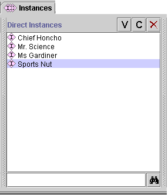

The Direct Instances pane shows all the direct instances, if any, for the class selected in the Class Pane at the Instances Tab, and allows you to view, edit, create, and delete direct instances.
A direct instance is an instance that has been created directly under the class. However, because of inheritance, an instance of a class is also an instance of all that class's superclasses. Therefore, an instance can be an instance of many classes; however, it can only be a direct instance of a single class.
This pane has three components:

When a single class is selected in the Class Pane at the Instances Tab, the Instances Window shows all the instances belonging to that class. Instances are displayed in alphabetical order by the text in the browser key, which is the slot that has been designated as the identifying slot for the class. If no browser key has been selected, Protégé-2000 uses a default key, <instance name>, which is displayed as a number, such as newspaper_0017. See The Browser Key Menu for more information.
When a single instance is selected, the information for that instance is shown in the Instances Form to the right.
The color of the icon to the left of the instance name gives information about the instance:
| The instance can
be edited. You can enter your edits directly to the right, or click the View |
|
| The instance cannot be edited. Instances cannot be edited if they are included from another project. See Including a Project for more information. |
Next: The Instance Buttons